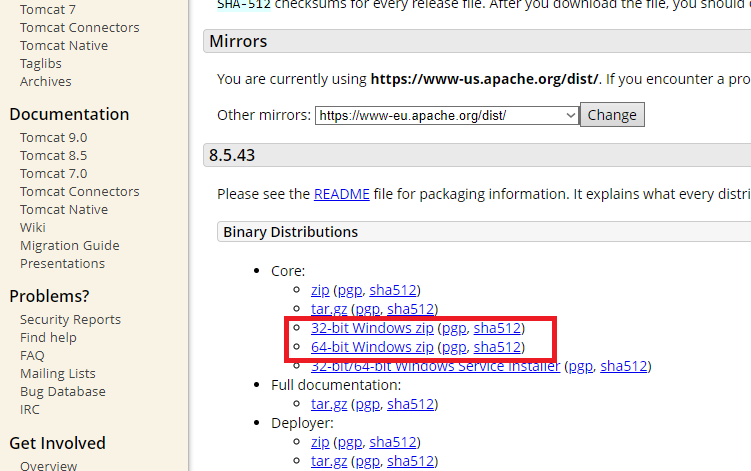
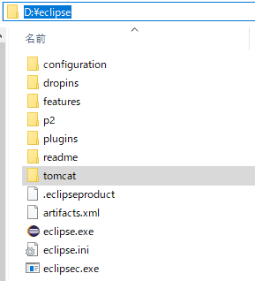
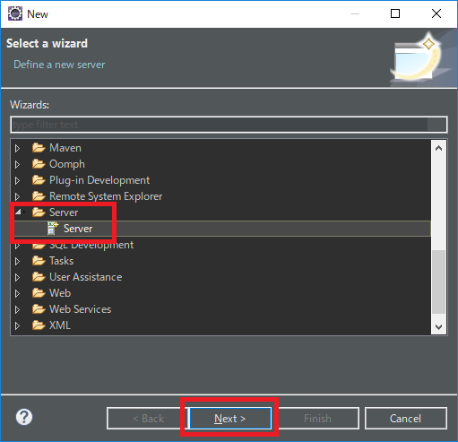
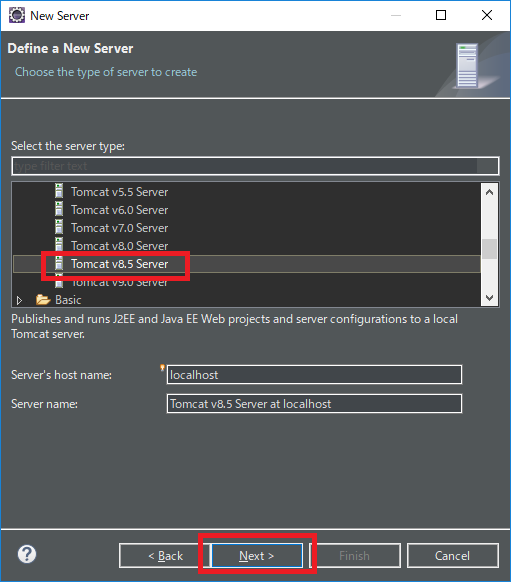
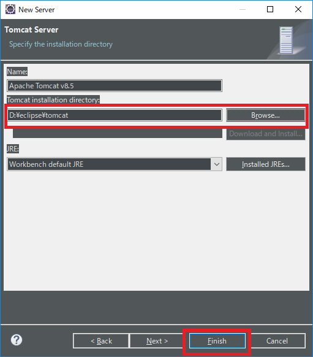
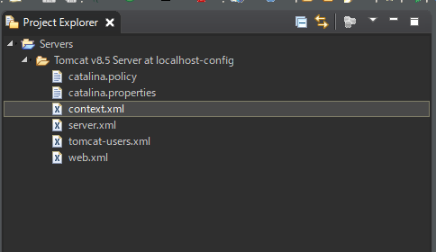
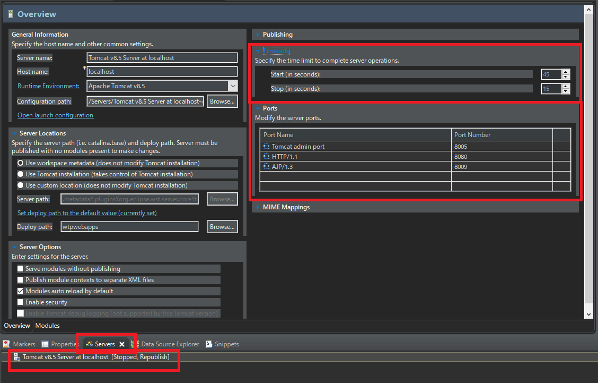

[Java] 「Eclipse」でトムキャット(tomcat)を設定する方法
こんにちは。明月です。
このページでは「Eclipse」でトムキャット(tomcat)を設定する方法に関して調べてみました。
トムキャットはクライアント(Browser)と通信しながらウェブページ情報(Html)を転送するウェブサーバ(Web Server)とウェブページを動的に作られるウェブコンテナ(サーブレットコンテナ)を搭載しているアプリケーションサーバ(WAS)の機能を持っているオープンソースプログラムです。
基本的にApache財団で提供するので無料だし、強力な機能を持っているサーバです。
「Eclipse」環境でJavaを利用してウェブ(JSP)を開発するために一応「Eclipse」でトムキャットが設定されていなければならないです。
そうするとトムキャットホムページに行ってダウンロードします。
link - https://tomcat.apache.org/download-80.cgi

「Eclipse」で使うものなので「Installer」ではなく、「Zip」になっている圧縮ファイルでダウンロードします。
そして、適当なところで圧縮を解凍してもよいですが、管理のため「Eclipse」がインストールされたところで解凍します。

トムキャットの解凍が終わったら、「Eclipse」を起動して新しいプロジェクトを生成します。
そしてプロジェクトウィザードはサーバを選択しますね。

そしてトムキャットバージョンと合わせるリストを選択します。

その後、トムキャットを解凍したフォルダを選択します。

プロジェクトエクスプローラに「Server」のプロジェクトがあり、トムキャット設定情報があれば設定完了になったことです。

トムキャット設定を変わるようには下記のServerタブをクリックしてサーバを選択します。
概要(Overview)のウィンドウがでますが、他の設定は触ることがないし、「Port」設定と「Timout」設定だけ仕様によって設定が変わる可能性がありますね。

タイムアウト設定はコンパイルする時にサーバが起動待ちですがコンパイル時間がかかることで設定時間より超えるとサーバが落ちることです。
PC仕様が遅いと思うとこのタイムアウト設定をしなければならないです。しなければ、起動する時に45秒タイムアウトでトムキャットが起動を止まります。
ポートの場合はトムキャットの基本ポートは「8080」です。
どこかでそのポートを使っているアプリケーションがあれば、起動しません。なので、ポート変更が必要ですが、その変更設定するところです。
簡単に起動確認をしたいですが、Servletプロジェクト生成が必要なので次の投稿で確認しましょう。
- [Java] Java servletでインスタンスを初期する方法2019/10/17 07:15:48
- [Java] Spring web frameworkで発生する文字化けのEncoding設定2019/10/16 07:32:55
- [Java] Web Spring frameworkでfilter設定2019/10/15 20:12:35
- [Java] Web serviceのweb.xmlでエラーページ設定2019/10/14 20:13:44
- [Java] JPAのDAOをFactoryパターンで管理する方法2019/10/13 22:55:52
- [Java] JPAのSpring frameworkで依存性注入する方法2019/10/13 00:40:08
- [Java] JPAでDAOを生成する方法2019/10/11 07:30:14
- [Java] JPAでトランザクションの使用方法とオブサーバーパターンで共通トランザクション関数を作り方2019/10/10 07:29:43
- [Java] JPAのQuery を作り方2019/10/09 07:34:08
- [Java] JPAのEntityクラス設定(Cascade, fetch)2019/10/08 07:43:33
- [Java] JPAでpersistance.xml設定とentityクラス設定(@GeneratedValue設定)2019/10/07 07:38:13
- [Java] EclipseでJPAフレームワーク設定する方法2019/10/04 19:24:43
- [Java] Web spring frameworkのJSPで使う言語 JSTL - XML2019/10/03 20:02:06
- [Java] Web spring frameworkのJSPで使う言語 JSTL - 関数、データベース2019/10/02 21:00:22
- [Java] Web spring frameworkのJSPで使う言語 JSTL - コアー、フォーマッティング2019/10/01 21:48:08
- [Python] 07. globalとnonlocal2020/06/03 20:34:49
- [Python] 06. 関数(function) - インライン関数、callbak、ラムダ(lambda)そしてクロージャ2020/06/02 20:51:22
- [Python] 05. コンプリヘンション(Comprehension)を使用する方法2020/06/01 19:38:58
- [Python] 04. 制御文(if, while, for, break, continue)とインデント2020/05/29 21:09:08
- [Python] 03. Pythonでリスト(list)とタプル(tuple)、そしてディクショナリ(dictionary)、セット(set)2020/05/27 18:49:08
- [Python] 02. データタイプ、変数宣言そしてコメントする方法2020/05/26 18:16:52
- [Python] 01. Python3をインストールする方法(Anacondaインストール)2020/05/25 19:02:44
- [Java] HttpConnectionを利用してウェブページを取得する方法2020/05/20 23:53:24
- [Java] Jsoupを利用してXMLファイル(HTML)を扱う方法2020/05/19 19:32:21
- [C#] 非同期ソケット通信(IOCP)-APMパターン2020/05/18 18:45:37
- [C#] 非同期ソケット通信(IOCP)-EAPパターン2020/05/15 19:31:02
- [C#] ソケット(Socket)通信をする方法2020/05/13 17:37:13
- [C#] NPOIを利用してExcelを読み込んで出力する方法2020/05/08 10:43:52
- [C#] NPOIライブラリを利用してエクセルファイルを生成する方法2020/05/07 01:49:01
- [C#] Geckoライブラリを利用してウェブスクレイピングする方法2020/05/05 00:52:26